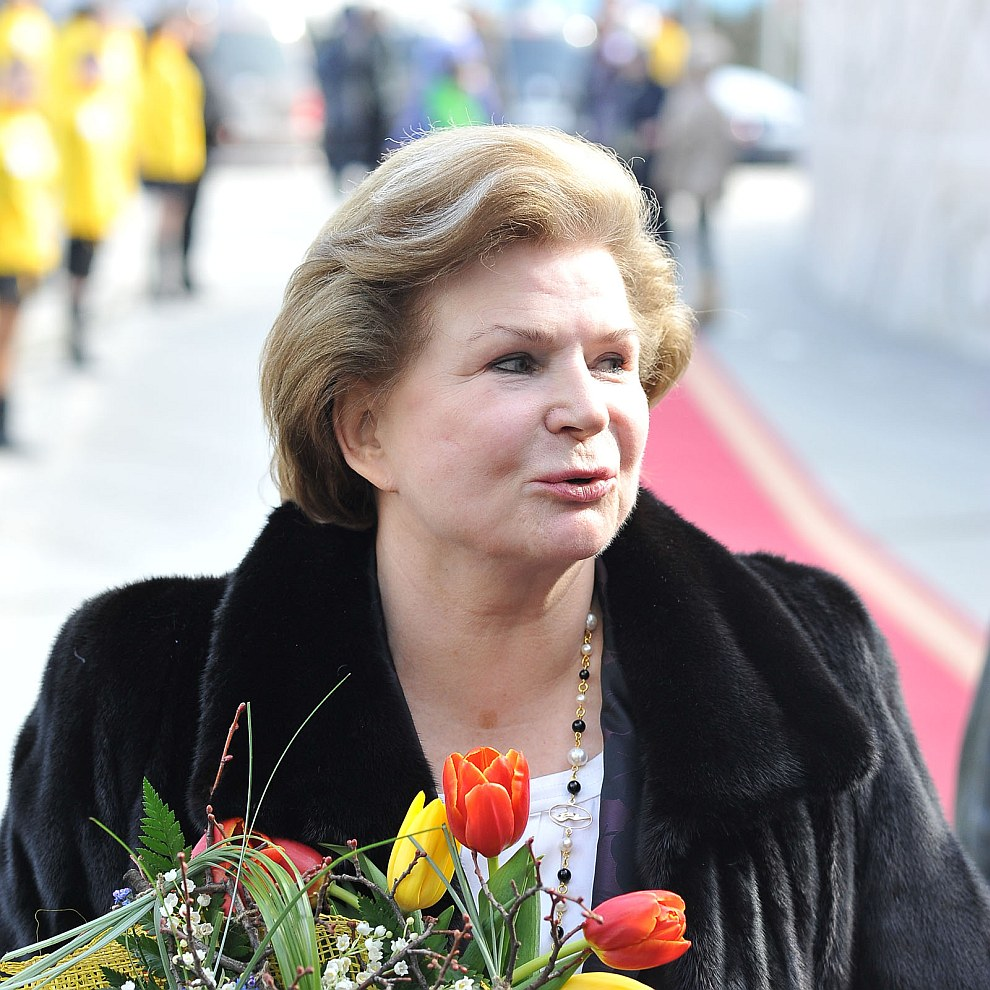
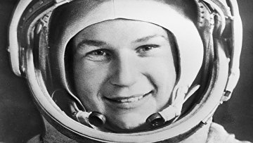
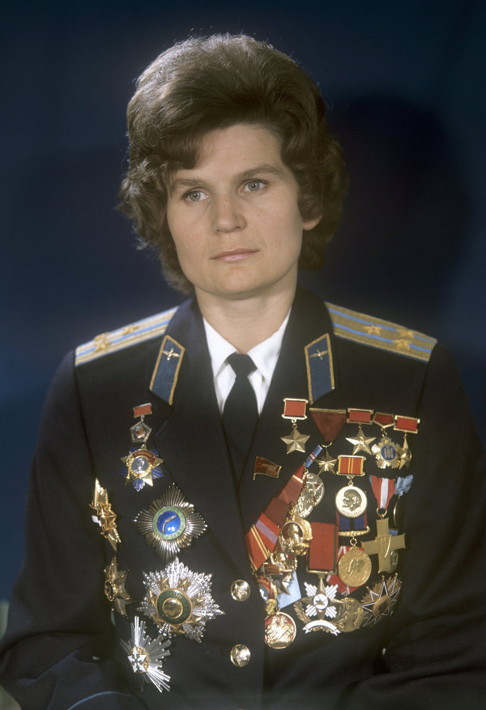

Валентина Владимировна Терешкова - советский космонавт, первая в мире женщина-космонавт, Герой Советского Союза
(позывной-"Чайка"), 10-й космонавт мира, удостоина также званий Героя Социалистического Труда ЧССР, Героя Социалистического Труда НБР, Героя Труда Вьетнама
Единственная в мире женщина, совершившая космический полет в одиночку
  
Страна: СССР 
Специальность: лётчик-космонавт
Воинское звание: генерал-майор 
Экспедиции: "Восток-6"
Дата рождения: 10 марта 1937 г."